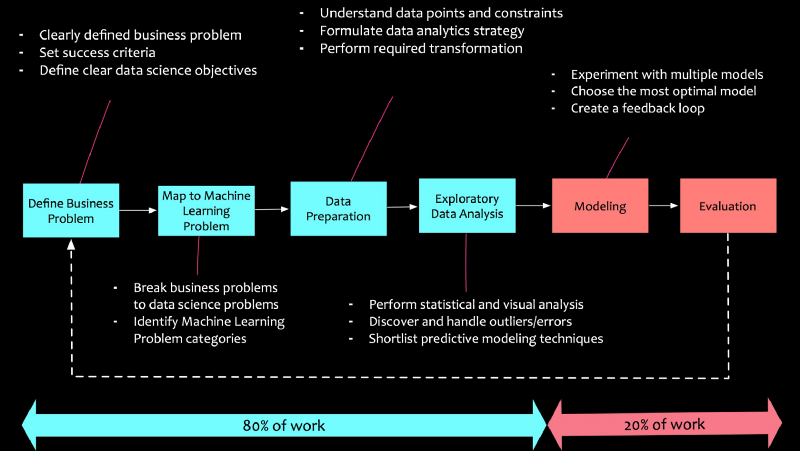
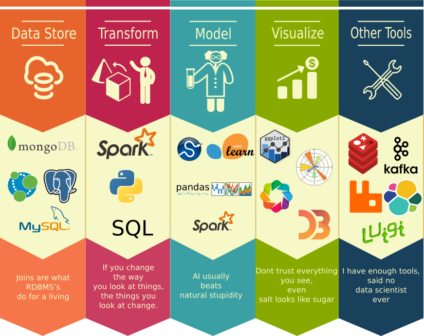

Data Science
Uma breve introdução
O que é Data Science?
“Data Science é uma ciência interdisciplinar que se trata de processamento de um grande volume de dados usando métodos estatísticos para extração de ideias sobre os mesmos”.1

Fonte: 2
Em 2006, Clive Humby, Matemático inglês e arquiteto do Tesco Clubcard cunhou a frase "Dados são o novo óleo". Falou o seguinte:
”Dados são o novo óleo. É valioso, mas se não refinado não pode ser usado. Tem que ser transformado em gás, plástico, produtos químicos, etc. para criar um entidade valiosa que crie uma atividade rentável; então, dados devem ser esmiússados, analizados para terem valor.” 3
Workflow
Fonte: 3
1. Definir o problema de negócio
Exemplo: Uma empresa precisa aumentar a base de clientes visando novos segmentos e reduzindo a rotatividade de clientes.
2. Decompor para um problema de Aprendizado de Máquina
Exemplos:
Reduzir a rotatividade de clientes em x%.
Identificar novos segmentos de clientes para marketing direcionado.
3. Preparação de Dados
4. Análise Exploratória de Dados
5. Modelagem
6. Deployment e Avaliação
Ferramentas
Python
Julia
R
Python
 Pandas
Jupyter
Bokeh
Seaborn
Numpy